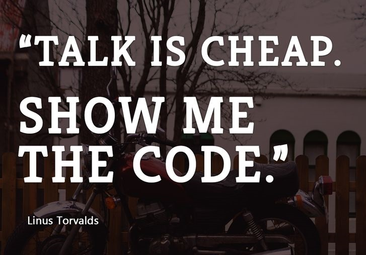

Grupo de tecnologia - BDD
rafael-pestano - DTI - STD - Ramal 4780
Agenda
- O que é?
- Por que?
- Estórias de usuário
- Especificação executvel
- Documentação viva
O que é BDD?
“BDD (Behaviour Driven Development) is a methodology for developing software through continuous example-based communication between developers, QAs and BAs.“
Originalmente foi concebido como uma evolução do TDD (Test Driven Development), pois:
- Desenvolvedores não sabem por onde começar;
- TDD foca muito no detalhe e esquece o todo;
- TDD Foca no como (implementação) e não no que (funcionalidades).
Mais detalhes no Guia de teste, seção 3.6.3
Por que?
Por que?
O Mantra do BDD
O Mantra do BDD

Estória de usuários
Vamos construir uma calculadora
“Como um matemático renomado
Eu quero somar números
Para que eu possa aprender a contar“
Especificação executável

Documentação viva
Resumo